The seven flat artworks — what ships, and what I want to ship instead
Every one of these 7 source images is already cropped to the artwork:
the linen, the vellum and the paper run off all four edges. There is no background in any of
them. The cut-out pass assumed there was one, found the artwork's own paper, and removed
it — which is why the left-hand column is broken.
So the proposal is not a better cut. It is no cut: ship the source image
as it is, opaque, a rectangle.
What I need from you: for each of the 7, does a rectangle of paper belong
on that shelf? Look at the bottom strip of each card — the ringed one is the proposal,
sitting at real size between its real neighbours. Tell me the keys you want and the keys you
don't; anything you reject stays broken as it is today until we find another way.
Bayeux Tapestry panel c. 1077 · Normandy · bayeux
ON THE SITE NOW
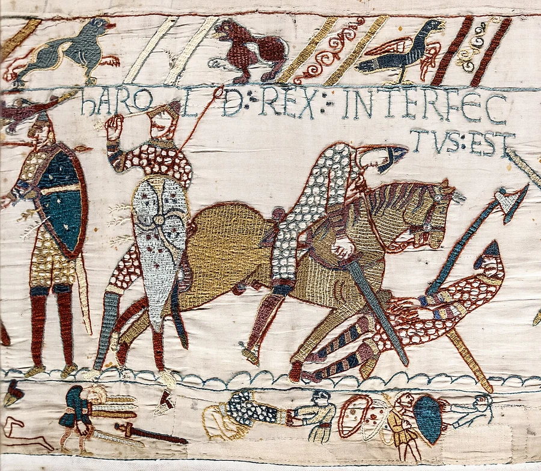
17 detached pieces · 33% of it floating · 16 holes punched through it · 13% of its area
PROPOSED — the source, nothing removed
0 islands · 0 holes · nothing removed
The source is a crop of the tapestry: linen runs off all four edges. The flood samples that linen as "background" and eats it — which is what the shipped cut did, leaving the figures floating.
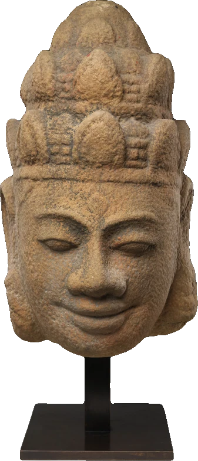
Cham sandstone sculpture
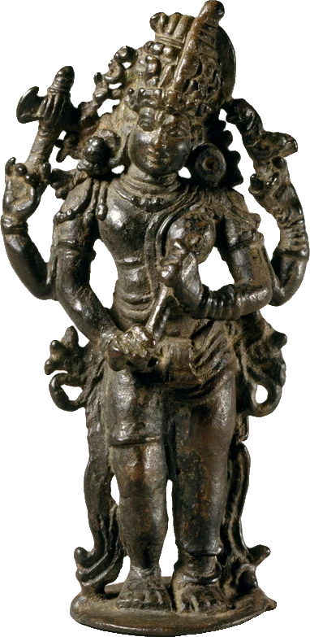
Ardhanarishvara, Chola bronzeBayeux Tapestry panel
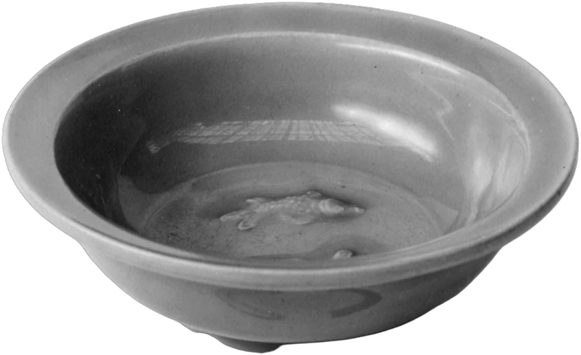
Ru ware bowl
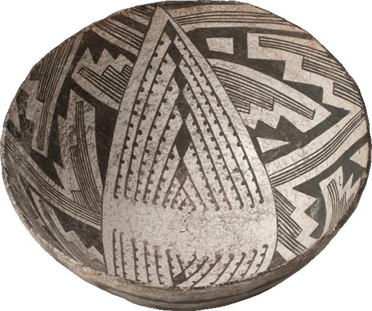
Ancestral Puebloan jar
at shelf size, between its real neighbours — proposed cut ringed
Dürer woodblock print 1515 · Nuremberg · durerblock
ON THE SITE NOW
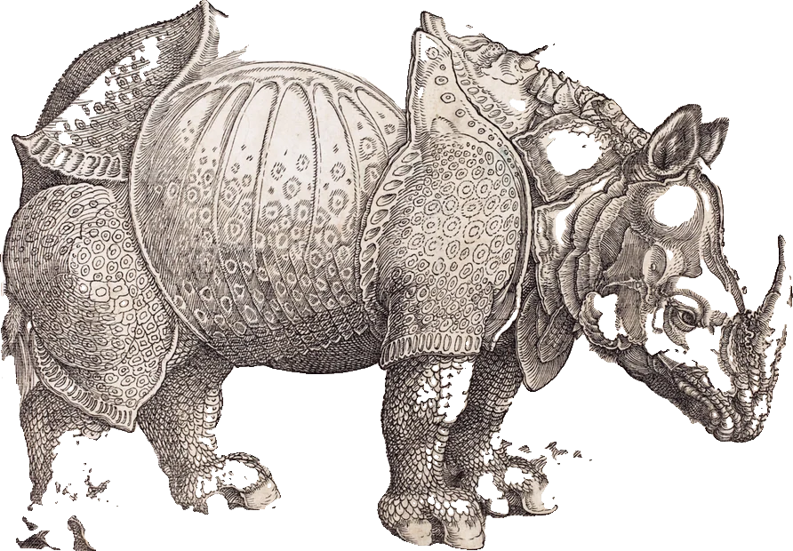
10 holes punched through it · 6% of its area
PROPOSED — the source, nothing removed
0 islands · 0 holes · nothing removed
A woodcut sheet, edge to edge. The shipped cut kept the rhino and punched ten holes through it; the letterpress text above it went entirely.
at shelf size, between its real neighbours — proposed cut ringed
The Great Wave off Kanagawa c. 1831 · Japan · greatwave
ON THE SITE NOW
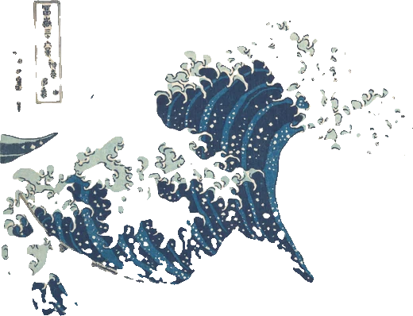
21 detached pieces · 20% of it floating · 5 holes punched through it · 5% of its area
PROPOSED — the source, nothing removed
0 islands · 0 holes · nothing removed
The print's sky is the same tone as its margin and joins it, so anything that removes "the background" removes the sky. The shipped cut kept only the blue and broke it into 21 pieces.
NetsukeStephenson’s RocketThe Great Wave off Kanagawa
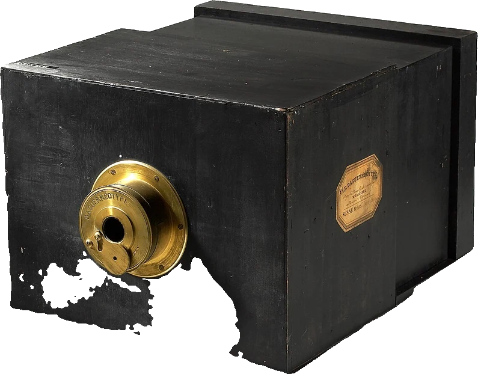
Daguerreotype camera
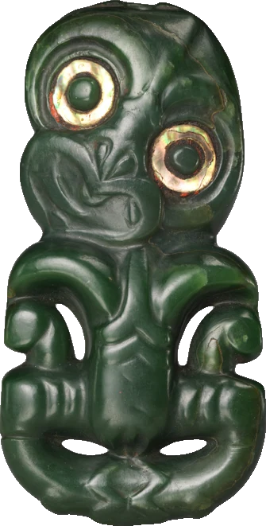
Hei-tiki pendant
at shelf size, between its real neighbours — proposed cut ringed
Book of Kells folio c. 800 CE · Ireland · kells
ON THE SITE NOW
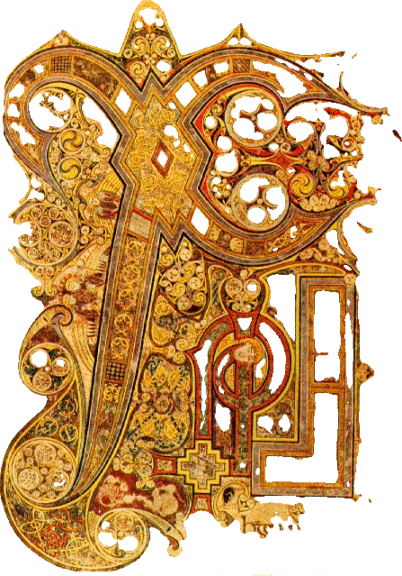
17 holes punched through it · 12% of its area
PROPOSED — the source, nothing removed
0 islands · 0 holes · nothing removed
A folio photographed edge to edge. The shipped cut punched 17 holes through the vellum; removing the "ground" bites ~60% off its last twelve columns.
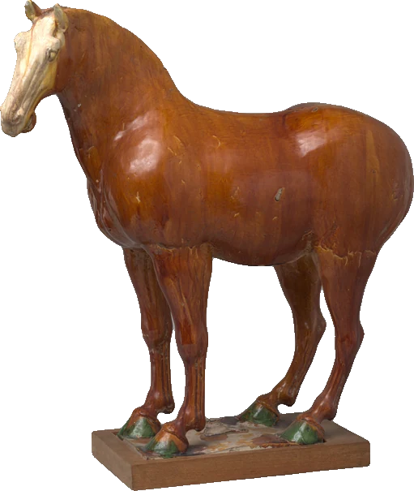
Tang sancai horse
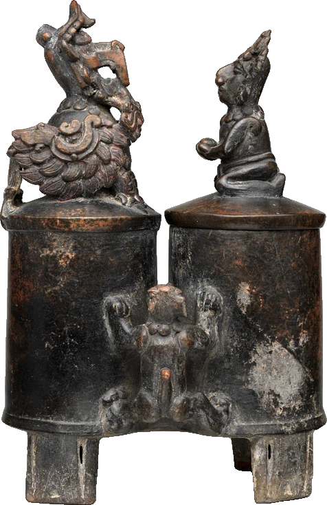
Whistling vesselBook of Kells folio
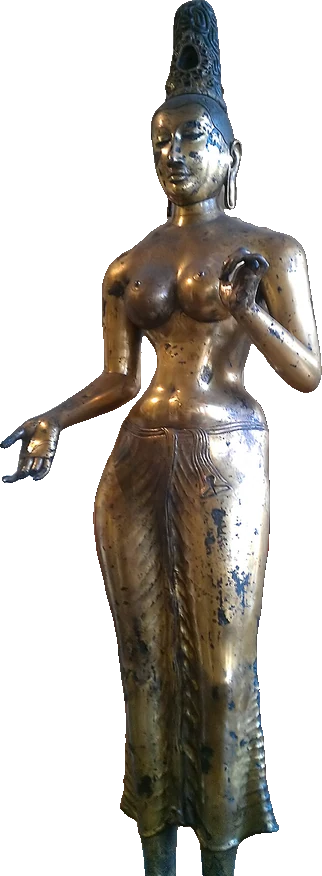
Bronze Tara
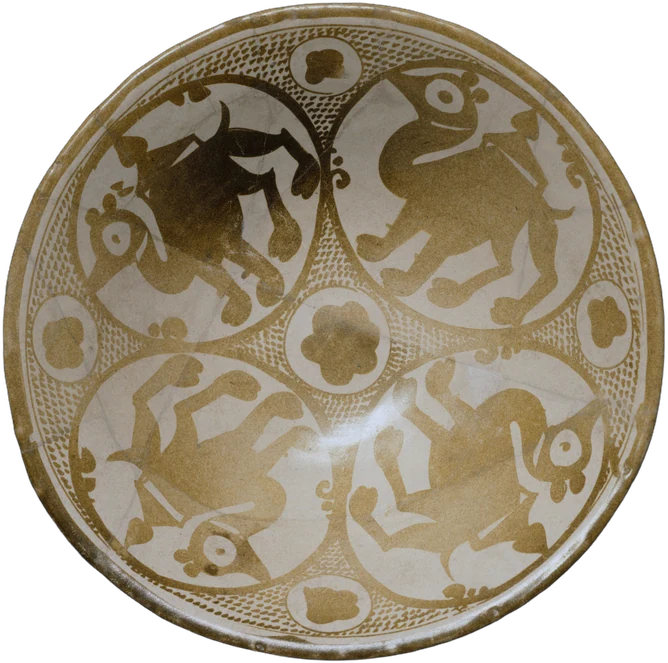
Abbasid lustre bowl
at shelf size, between its real neighbours — proposed cut ringed
Stephenson’s Rocket 1829 · rocket
ON THE SITE NOW
2.7px fringe of un-cut background
PROPOSED — the source, nothing removed
0 islands · 0 holes · nothing removed
A wood engraving on white paper. The white sky IS the paper IS the picture, so there is no background to take — the shipped cut clipped it square.
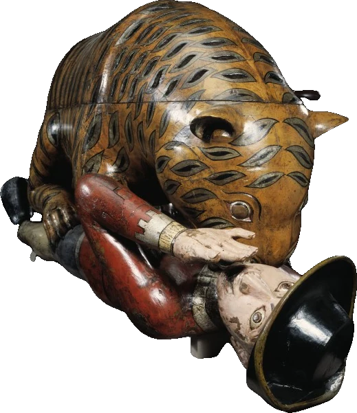
Tipu's TigerNetsukeStephenson’s RocketThe Great Wave off KanagawaDaguerreotype camera
at shelf size, between its real neighbours — proposed cut ringed
Ottoman tughra c. 1555 · Ottoman · tughra
ON THE SITE NOW
2 detached pieces · 2% of it floating · 38 holes punched through it · 41% of its area
PROPOSED — the source, nothing removed
0 islands · 0 holes · nothing removed
The shipped cut ate the illuminated oval to confetti: 38 holes over 41% of it. Removing the ground here removes nothing at all — measured cov 1.000.
Dürer woodblock printBenin bronze plaqueOttoman tughra
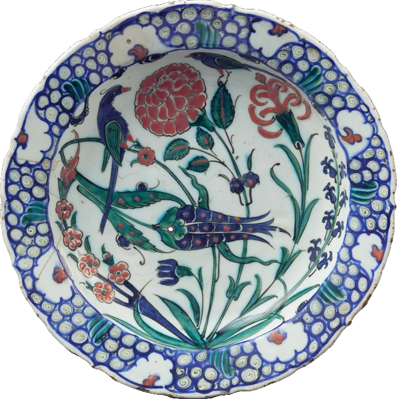
Iznik dish
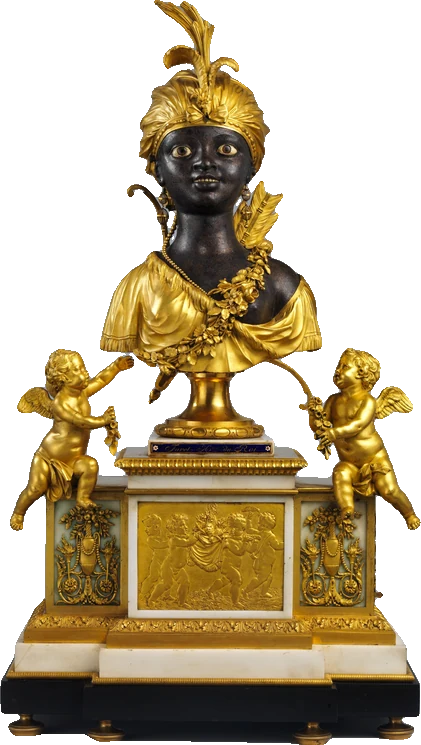
Table clock
at shelf size, between its real neighbours — proposed cut ringed
Mughal album page c. 1620 · Mughal · mughalmini
ON THE SITE NOW
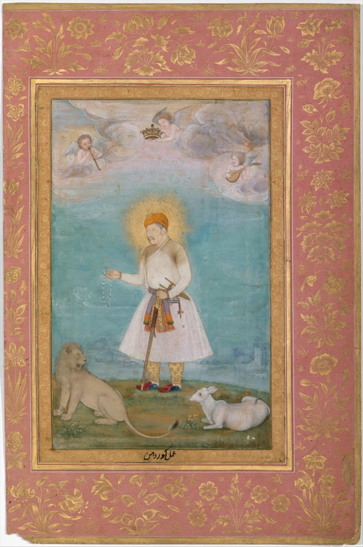
2 detached pieces · 1% of it floating · 1 holes punched through it
PROPOSED — the source, nothing removed
0 islands · 0 holes · nothing removed
A folio with its pink border, edge to edge. The shipped cut threw the border away and tore the painting's edges.
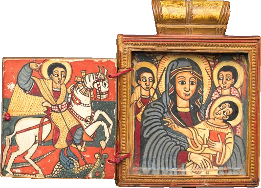
Ethiopian painted icon
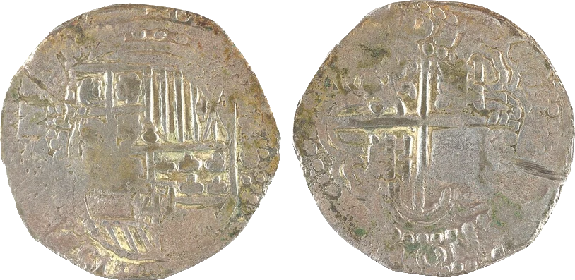
Spanish piece of eightMughal album page
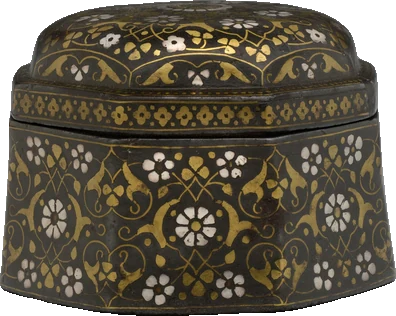
Bidri vessel
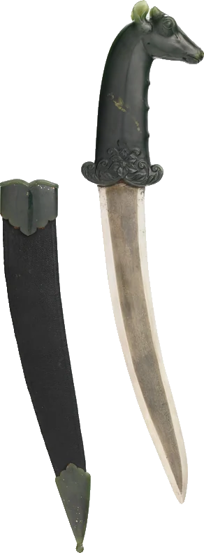
Katar dagger
at shelf size, between its real neighbours — proposed cut ringed